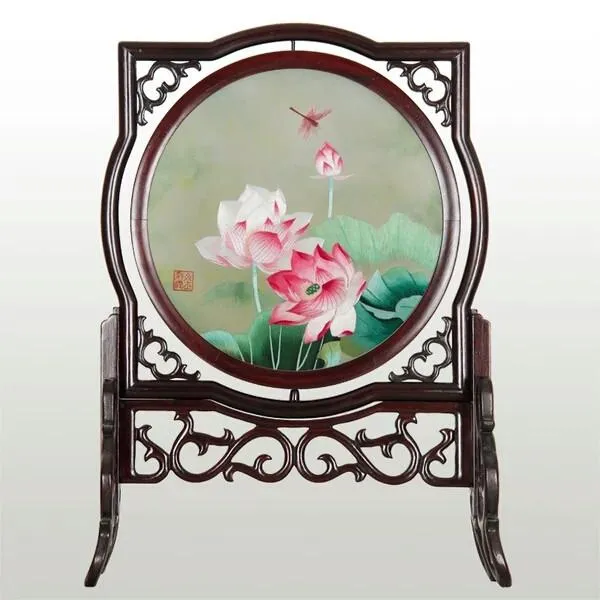
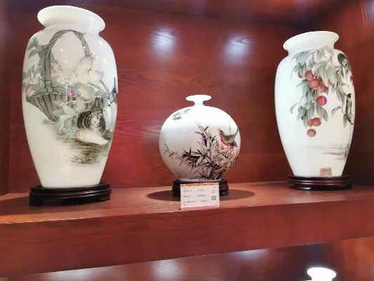
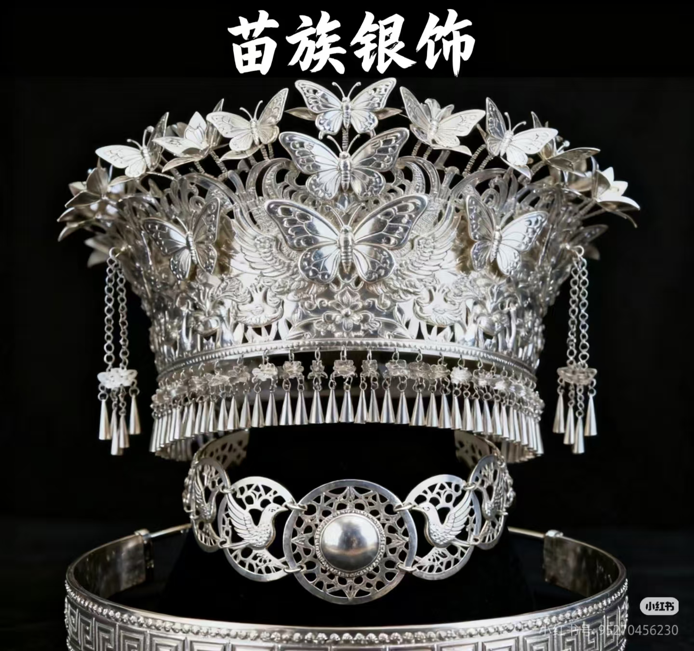
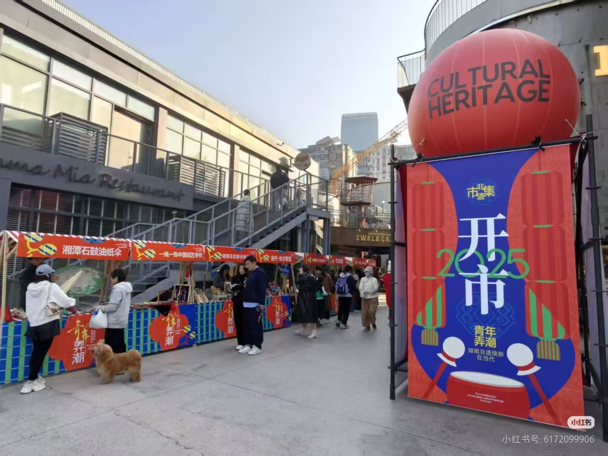
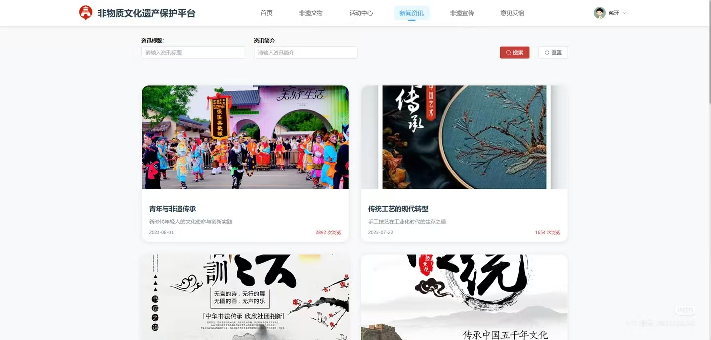
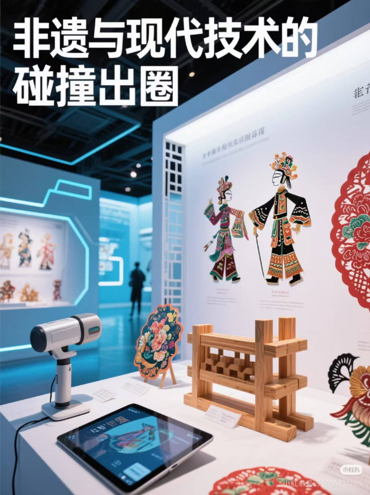

湖南工艺，源远流长，工艺精湛，风格独特。从湘绣的一针一线，到醴陵瓷器的五彩斑斓；从湘西苗族银饰的精美锻造，到邵阳竹艺的巧夺天工，湖湘大地孕育了无数令人惊叹的传统工艺。这些工艺不仅是湖南人民智慧的结晶，更是中华文化宝库中的璀璨明珠，承载着深厚的历史底蕴和民族精神。
湘绣是中国四大名绣之一，以其构图严谨、色彩鲜明、针法多样、绣工精细而闻名于世。本次体验活动邀请到国家级非物质文化遗产传承人亲自指导，让参与者亲手体验湘绣的独特魅力，感受传统工艺的精湛技艺。
已报名：786人 / 目标：1000人

醴陵釉下五彩瓷是湖南的传统名瓷，以其独特的釉下彩绘工艺和绚丽的色彩而著称。活动中，参与者将了解瓷器的制作过程，亲自体验拉坯、绘画等环节，感受千年瓷都的魅力与传承。
已报名：652人 / 目标：1000人

湘西苗族银饰以其精美绝伦的工艺和深厚的文化内涵而闻名。本次活动邀请到苗族银饰技艺传承人，教授参与者银饰的基本锻造方法，让大家亲手制作简单的银饰作品，感受少数民族工艺的独特魅力。
已报名：812人 / 目标：1000人

新春将至，一场覆盖全省的非遗大集活动火热启幕。本次活动以"非遗焕新贺新春"为主题，联动全省14个市州，策划推出480余场特色活动，让古老非遗与新春民俗深度交融，为市民游客献上一场独具湖湘韵味的文化盛宴。
2025年12月5日

我省首个非遗数字平台"遇见非遗"正式上线，平台通过3D建模、VR等技术，将湘绣、醴陵瓷、苗族银饰等传统工艺以数字化形式呈现，让用户足不出户就能体验传统工艺的魅力，开启了湖湘工艺的"元宇宙时代"。
2025年12月8日

我省正式启动非遗科技创新三年计划，计划通过科技赋能传统工艺，推动非遗与数字经济、创意设计等融合发展，培育一批具有市场竞争力的非遗创新产品和品牌，让传统工艺在新时代焕发出新的活力。
2025年12月10日